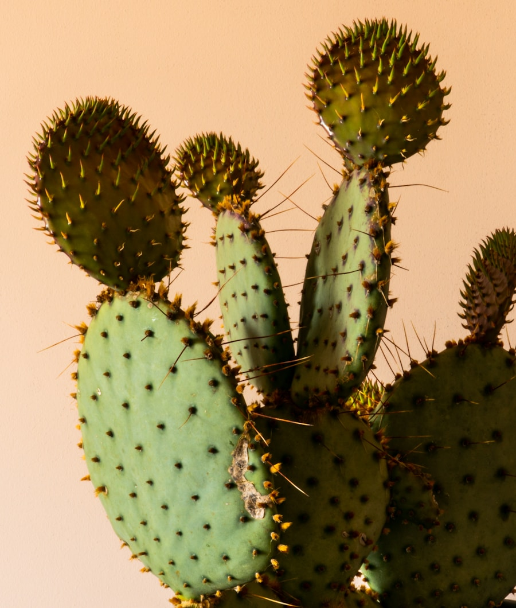
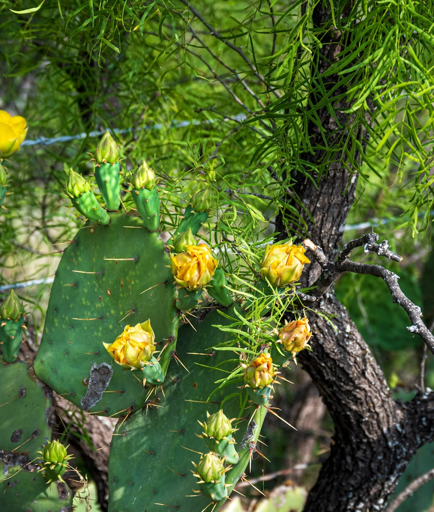

Prickly Pear · Cactus Water · Pear Skin
A bright opening — watery prickly pear, cactus water, and pear skin. Juicy, lifted, and immediately alive.

€ 240
Beles · Fico d'India — an oil-rich prickly pear parfum, hand-finished in Copenhagen. High perfume-oil concentration for slow, skin-adherent wear close to skin.
Daily wear, gifting, and the fullest expression of the Beles accord.
Priority access when bottles release
Oil-rich parfum with warm projection for the first two hours, then a close, sun-lit fruit trail on skin.
Prickly pear, cactus water, and pear skin.
Hibiscus and cactus bloom turn blossom-soft and quietly sunlit.
Soft musk, mineral air, and warm stone stay close to skin.
Parfum (perfume oil concentrate), alcohol denat., aqua, benzyl salicylate, limonene, linalool, coumarin, citral. Carrier alcohol is present as in all fine fragrance; the composition is built around a high perfume-oil ratio.
Waitlist members receive a private purchase link when the next release opens. Complimentary worldwide shipping applies at launch. Unopened orders may be returned within 30 days.
Three movements, drawn carefully into one another — designed to ripen on the skin as sun warms the fruit on the pad.
A bright opening — watery prickly pear, cactus water, and pear skin. Juicy, lifted, and immediately alive.
The Beles accord — floral, warm, and quietly sunlit. Ripe fruit held with polished restraint.
A grounded close — soft musk, mineral air, and warm stone on skin. The fragrance settles into a calm, close-wearing trace.
Beles · Fico d'India, built as a quiet balance of ripe fruit, desert green, soft bloom, and warm skin.

Fruit
Prickly pear, cactus water, pear skin.

Green
Cactus pad, green leaves, sun-warmed stem.

Bloom
Hibiscus, cactus bloom, soft floral lift.
Warmth
Soft musk, mineral air, warm stone.
Beles is composed as an oil-rich parfum, designed to unfold slowly and wear close to skin. You wear less. It lasts longer. The fruit accord opens over hours, not minutes.
Read more in the journal: What Fico d'India means in Beles.
A square matte flacon with a brushed-silver cap and a winged leopard emblem stippled at the base. EILLON, Beles, and Fico d'India are pressed directly into the face — no label, no band.